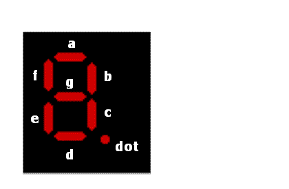

System
calls
Note
None of the registers are
affected in a system call. However in a conventional
microprocessor kit, registers are affected in almost all systems
call. It is the responsibility of the programmer to save them and
then restore them after the system call.
- Reset
- This function resets the
Microprocessor kit
Input : A = 00
CALL 0005
Output : None
Note :- This system call is ignored
-
- mvi a,0
- call 0x5
- Blank
display
This function blanks the 7 segment display
Input : A = 01
C = 00,01,02,03
CALL 05
- if c=00, the Address
field display is blanked
- if c=01, the data field
display is blanked
- if c=02, the status
field display is blanked
- if c=03, all the digits
of display is blanked
- Display
dot
- This function displays the
DOT in any of the digit depending
on the C register content
Input : A = 02
C = 00,01,02,03
CALL 0005
- if c=00, dot will be
displayed in the right most of the data field
- if c=01, dot will be
displayed in the right most of the address field
- if c=02, dot will be
displayed in the right most of the upper two digits
of the address field
- if c=03, dot will be
displayed in the right most digit of the status field
- Display
data
- This function display the
data, which are in the memory addressed
by HL register Using 'C' register, data can be displayed
in any
area of the 7 segment Display
Input : A = 03
C = 00 to 0A
CALL 0005
- if c=00, the data from
the memory pointed by the HL register will be
displayed in the first digit of the display. The
first digit corresponds to the leftmost 7 segment
display
- if c=08, 2 digit data
will be displayed in the data field, two digits will
be taken from memory pointed by (HL) and (HL+1).
- if c=09, 4 digit data
will be displayed in the address field.
- if c=0A, 2 digit data
will be displayed in the status field.
- if c=0B, 8 digit data
will be displayed in all the eight 7 segment display.
The following Alphanumeric can be displayed in the 7
segment display of the machine Data format for 7
segment Display Alphanumeric to be displayed
Corresponding data to be loaded in memory
| 1 |
1 |
| 2 |
2 |
| 3 |
3 |
| 4 |
4 |
| 5 |
5 |
| 6 |
6 |
| 7 |
7 |
| 8 |
8 |
| 9 |
9 |
| A |
A |
| B |
B |
| C |
C |
| D |
D |
| E |
E |
| F |
F |
| Blank |
10 |
| Dot |
11 |
| Hyphen
|
12 |
- Display
the Message "Err"
- This function will display
"Err" in the display and blank the
remaining led's
Input : A = 04
CALL 0005
-
-
- Read from
Keyboard
- This function will read a
key and return the key code in
A register
Input : A = 05
CALL 0005
Output : A = code of the key
-
- Code
conversion
- Hex to ASCII & ASCII to
Hex code conversion
When Reg 'C' is 00 this function converts a hex value to
it equivalent ASCII value The 8 bit hex data will be
converted to 2 ASCII values
Input : A = 06
C = 00
L = hex value
Output : DE register will have the ASCII values
D - Higher byte,
L - Lower byte
Result : DE will have the ASCII value
When Reg 'C' is 01 this function converts two ASCII
values to its equivalent 8 bit Hex value
- Input : A = 06
C = 01
H = Higher byte ASCII value
L = Lower byte ASCII value
Output : A contains the hex value
Result : A will be returned with the 8 bit
hex value
-
- Calculate
length of a block
- This function calculates
the length of a block of memory
Input : A = 07
HL = Starting address of the memory
BC = End address of the memory
CALL 0005
Output : DE contains the block size
Note :- if HL>BC, then a Bad system call error message
will
be generated
-
- Generate
tone
- This function generates a
tone for driving a speaker
Input : A = 08
C = 00,01
CALL 0005
Result : Generates a constant frequency for the speaker
for a time period of 8 millisecond
When C=00, it generates 1 KHz
When C=01, it generates 2 KHz
-
- Delay
routine
- Input : A = 09
HL = Delay value
CALL 0005
Result : The delay time is equal to the value of 7 * HL
milliseconds.
Note :- In the microprocessor kit the delay value is
calculated
in microseconds
-
- A/D
Conversion
- Note :- This function has
not been implmented
A call to this function will simply be ignored
Input : A = 0A
C = Channel number
CALL 0005
Output : Digital value in A register
-
- Display
HL data
- Input : A = 0B
C = 00,01,02
HL = Data to be displayed
CALL 0005
- When C=00, contents of
L are displayed in the status field
- When C=01, contents of
H and L are displayed in the Address field
- When C=02, contents of
L are displayed in the Data field
- Data from
keyboard
- Input : A = 0C
C = 00,01
CALL 0005
Output : HL - contains the data got from keyboard
- When C=00, 4 keys are
read and stored as 16 bit data in HL. The data read,
is also displayed in the address field
- When C=01, 2 keys are
read and stored as 8 bit data in L. The data read, is
also displayed in the data field
- Display
data using memory pointer
- Input : A = 0D
C = 00,01,02,03
HL = Memory pointer
CALL 0005
- When C=00, displays
data in Status field
- When C=01, displays
data in Address field
- When C=02, displays
data in Data field
- When C=03, displays
data in all 8 digits
HL - points to the address whose contents are the 7
segment display codes for the data to be displayed
the 7 segment display format in accordance with the
data bys is as:
| Data bus |
D7 |
D6 |
D5 |
D4 |
D3 |
D2 |
D1 |
D0 |
| 7 Segment code |
d |
c |
b |
a |
dot |
g |
e |
f |

Note :- A zero in the corresponding segment will make that
segment glow
- Serial
Input from COM1/COM2
- Input : A = 0E
C = 00,01
B = Data from COM1/COM2
CALL 0005
Result : Serial input a single byte from
COM1/COM2
- When C=00, then serial
input from COM1
- When C=01, then serial
input from COM2
- Serial
Output to COM1/COM2
- Input : A = 0F
C = 00,01
B = Data to output serially
CALL 0005
Result : Serial out serially through
COM1/COM2
- When C=00, then serial
output through COM1
- When C=01, then serial
output through COM2
-
- Print
data
- Input : A = 010
C = 00,01
B = Data to be printed
CALL 0005
- When C=00, contents of
B are printed as an ASCII character
- When C=01, contents of
B are printed as data
If the printer is not connected, then the program
waits for the
time out signal and issues an appropriate warning
after the time
out
-
- Print
CRLF
- Input : A = 011
CALL 0005
Prints a Carriage and a Linefeed
If the printer is not connected, then the program waits
for the
time out signal and issues an appropriate warning after
the time
out.